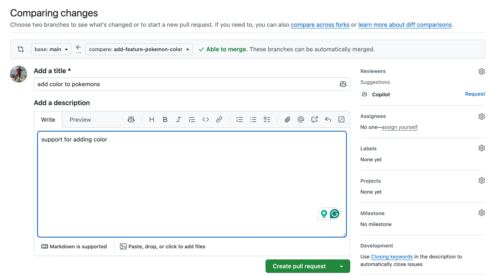
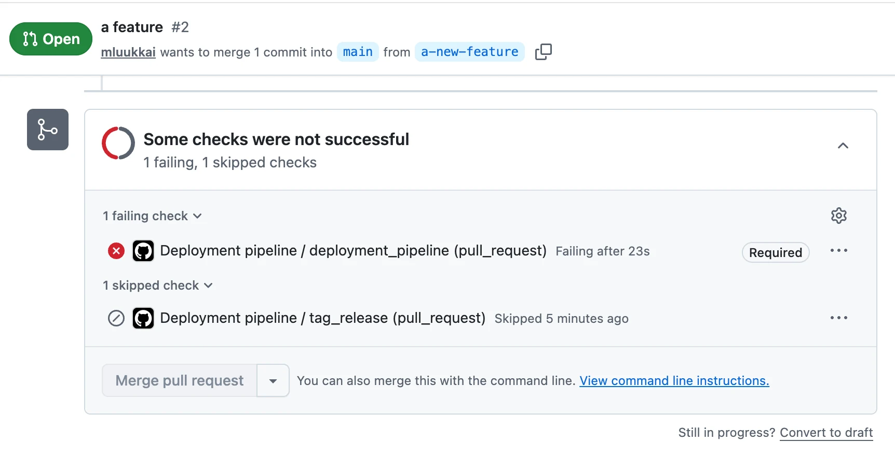
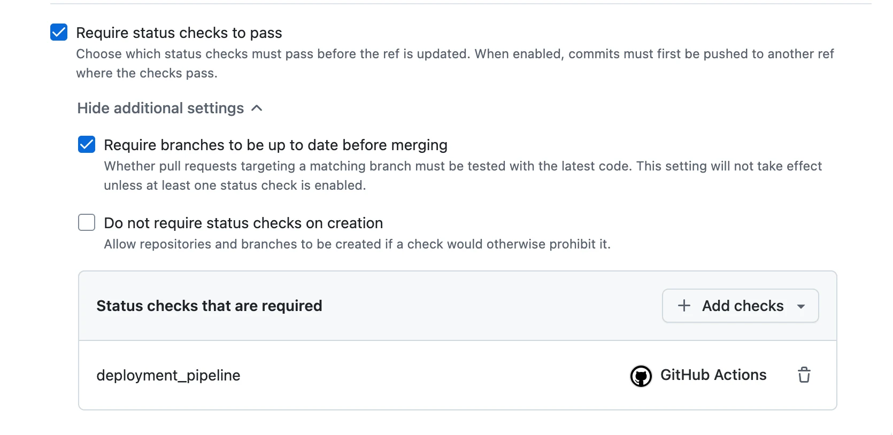

الجزء 11: التكامل والتسليم المستمر
الحفاظ على اللون الأخضر
الحفاظ على اللون الأخضر
يجب أن يظل الفرع الرئيسي من شيفرتك أخضر دائماً. وأن تكون الشيفرة خضراء يعني أن جميع خطوات خط أنابيب البناء لديك يجب أن تكتمل بنجاح: يجب أن يُبنى المشروع بنجاح، وأن تُشغَّل الاختبارات دون أخطاء، وألّا يكون لدى مدقّق الشيفرة (linter) ما يشتكي منه، وهكذا.
لماذا يعدّ هذا مهماً؟ على الأرجح ستنشر شيفرتك إلى بيئة الإنتاج من فرعك الرئيسي تحديداً. أي إخفاقات في الفرع الرئيسي تعني أنه لا يمكن نشر ميزات جديدة إلى الإنتاج حتى تُحلّ المشكلة. وأحياناً ستكتشف خطأً مزعجاً في الإنتاج لم يلتقطه خط أنابيب CI/CD. في هذه الحالات، تريد أن تكون قادراً على إرجاع بيئة الإنتاج إلى commit سابق بطريقة آمنة.
فكيف تحافظ على فرعك الرئيسي أخضر إذن؟ تجنّب إجراء commit لأي تغييرات مباشرة في الفرع الرئيسي. بدلاً من ذلك، أجرِ commit لشيفرتك على فرع مبني على أحدث نسخة ممكنة من الفرع الرئيسي. وبمجرد أن ترى أن الفرع جاهز للدمج في الرئيسي، تُنشئ طلب سحب (Pull Request) على GitHub، ويُشار إليه أيضاً بـ PR.
العمل بطلبات السحب
طلبات السحب جزء جوهري من عملية التعاون عند العمل على أي مشروع برمجي فيه مساهمان على الأقل. عند إجراء تغييرات على مشروع، تنتقل محلياً إلى فرع جديد، وتُجري تغييراتك وتُجري لها commit، وتدفع الفرع إلى المستودع البعيد (إلى GitHub في حالتنا)، وتنشئ طلب سحب ليراجع أحدهم تغييراتك قبل أن يمكن دمجها في الفرع الرئيسي.
هناك عدة أسباب تجعل استخدام طلبات السحب ومراجعة شيفرتك من قِبل شخص آخر على الأقل فكرة جيدة دائماً.
- حتى المطوّر المتمرس قد تغيب عنه غالباً بعض المشكلات في شيفرته: نعرف جميعاً تأثير الرؤية النفقية (tunnel vision).
- قد تكون لدى المراجع وجهة نظر مختلفة ويقدّم منظوراً مغايراً.
- بعد قراءة تغييراتك، سيلمّ مطوّر آخر على الأقل بالتغييرات التي أجريتها.
- يتيح لك استخدام طلبات السحب تشغيل جميع المهام في خط أنابيب CI تلقائياً قبل وصول الشيفرة إلى الفرع الرئيسي. وتوفّر GitHub Actions محفّزاً (trigger) لطلبات السحب.
يمكنك حتى ضبط مستودع GitHub لديك بحيث لا يمكن دمج طلبات السحب إلا بعد الموافقة عليها.
لإنشاء طلب سحب جديد، افتح فرعك في GitHub وانقر على زر «Compare & pull request» الأخضر في الأعلى. ستظهر لك استمارة يمكنك من خلالها كتابة وصف طلب السحب.

تعرض واجهة طلبات السحب في GitHub وصفاً وواجهة نقاش. وفي الأسفل تعرض جميع فحوصات CI (في حالتنا كل إجراء من إجراءات GitHub Actions لدينا) المضبوطة للعمل مع كل طلب سحب وحالات هذه الفحوصات. لوحة خضراء بالكامل هي ما تطمح إليه! يمكنك النقر على Details الخاص بكل فحص لعرض التفاصيل وسجلات التشغيل.
كل أسيار العمل التي نظرنا إليها حتى الآن كانت تُحفَّز عبر commits إلى الفرع الرئيسي. لجعل سير العمل يعمل عند كل طلب سحب، سيكون علينا تحديث جزء المحفّزات من سير العمل. نستخدم المحفّز «pull_request» للفرع «main» (فرعنا الرئيسي) ونقصر المحفّز على الحدثين «opened» و«synchronize». يعني هذا ببساطة أن سير العمل سيعمل عندما يُفتح طلب سحب إلى الفرع الرئيسي أو يُحدَّث.
لذا دعنا نغيّر الأحداث التي تحفّز سير العمل كما يلي:
on:
push:
branches:
- main
// BEGIN HIGHLIGHT
pull_request:
branches: [main]
types: [opened, synchronize]
// END HIGHLIGHT
سنعمل قريباً على جعل دفع الشيفرة مباشرة إلى الفرع الرئيسي مستحيلاً، لكن في غضون ذلك، دعنا نجعل سير العمل يعمل أيضاً مع جميع عمليات الدفع المباشر الممكنة إلى الفرع الرئيسي.
13. طلب السحب
14. تشغيل خطوة النشر للفرع الرئيسي فقط
الإصدارات
أهم غرض من الإصدارات هو التعريف الفريد للبرمجية التي نشغّلها والشيفرة المرتبطة بها.
كذلك يُعدّ ترتيب الإصدارات معلومة مهمة. فمثلاً، إذا كان الإصدار الحالي قد أفسد وظيفة حرجة ونحتاج إلى تحديد الإصدار السابق من البرمجية كي نتمكن من إرجاع الإصدار إلى حالة مستقرة.
الإصدارات الدلالية وإصدارات التجزئة
كيفية إصدار نسخ التطبيق تُسمى أحياناً استراتيجية الإصدارات. وسننظر في اثنتين من هذه الاستراتيجيات ونقارن بينهما.
الأولى هي الإصدارات الدلالية (semantic versioning)، حيث يكون الإصدار بالصيغة {major}.{minor}.{patch}. فمثلاً، إذا كان الإصدار هو 1.2.3، فإن 1 هو الإصدار الرئيسي (major)، و2 هو الإصدار الثانوي (minor)، و3 هو إصدار التصحيح (patch).
وبشكل عام، فالتغييرات التي تصلح الوظائف دون تغيير طريقة عمل التطبيق من الخارج هي تغييرات تصحيحية، والتغييرات التي تُدخل تعديلات صغيرة على الوظائف (كما تُرى من الخارج) هي تغييرات ثانوية، والتغييرات التي تغيّر التطبيق بالكامل (أو تغيّر وظائفه تغييراً جوهرياً) هي تغييرات رئيسية. وقد تختلف تعريفات كل من هذه المصطلحات من مشروع لآخر.
على سبيل المثال، تتبع مكتبات npm الإصدارات الدلالية. وفي وقت كتابة هذا النص (14 مارس 2026)، كان أحدث إصدار من React هو 19.2.0، إذن الإصدار الرئيسي هو 19، والإصدار الثانوي هو 2.
أما إصدارات التجزئة (وتُعرف أحياناً أيضاً باسم SHA versioning) فمختلفة تماماً. «رقم» الإصدار في إصدارات التجزئة هو تجزئة (تبدو كنص عشوائي) مشتقة من محتويات المستودع والتغييرات المُدخَلَة في الـ commit الذي أنشأ الإصدار. في Git، يُنجَز هذا نيابة عنك مسبقاً عبر تجزئة الـ commit الفريدة لكل مجموعة تغييرات.
تُستخدم إصدارات التجزئة دائماً تقريباً إلى جانب الأتمتة. فنسخ أرقام إصدار بطول 32 حرفاً هنا وهناك للتأكد من أن كل شيء منشور بشكل صحيح أمر مزعج (وعرضة للخطأ).
لكن إلى ماذا يشير الإصدار؟
تحديد الشيفرة التي تنتمي إلى إصدار معين أمر مهم، والطريقة التي يتحقق بها ذلك مختلفة تماماً مرة أخرى بين الإصدارات الدلالية وإصدارات التجزئة. في إصدارات التجزئة (في Git على الأقل) الأمر بسيط كالبحث عن الـ commit بناءً على التجزئة. وهذا يخبرنا بالضبط ما الشيفرة المنشورة مع إصدار محدد.
يغدو الأمر أكثر تعقيداً قليلاً عند استخدام الإصدارات الدلالية، وهناك عدة طرق لتناول المشكلة. وهي تتلخص في ثلاث مقاربات ممكنة: شيء في الشيفرة نفسها، أو شيء في المستودع أو في بياناته الوصفية، أو شيء خارج المستودع تماماً.
وبينما لن نغطي الخيار الأخير في القائمة (فهو موضوع متشعّب بحد ذاته)، يجدر ذكر أنه قد يكون بسيطاً كجدول بيانات يسرد الإصدار الدلالي والـ commit الذي يشير إليه.
أما المقاربتان القائمتان على المستودع، فالمقاربة التي تعتمد على شيء في الشيفرة تتلخص عادةً في رقم إصدار موجود في ملف، بينما تعتمد مقاربة المستودع/البيانات الوصفية عادةً على الوسوم أو (في حالة GitHub) الإصدارات (releases). وفي حالة الوسوم أو الإصدارات، يكون الأمر بسيطاً نسبياً: يشير الوسم أو الإصدار إلى commit، والشيفرة الموجودة في ذلك الـ commit هي شيفرة الإصدار.
ترتيب الإصدارات
في الإصدارات الدلالية، وحتى لو كانت لدينا قفزات إصدار من أنواع مختلفة (رئيسي أو ثانوي أو تصحيحي)، فما زال من السهل جداً ترتيب الإصدارات: 1.3.7 يأتي قبل 2.0.0 الذي يأتي بدوره قبل 2.1.5 الذي يأتي قبل 2.2.0. ومع ذلك، لا تزال هناك حاجة إلى قائمة بالإصدارات (يوفرها مدير حزم أو GitHub بسهولة) لمعرفة آخر إصدار، لكن النظر إلى تلك القائمة والحديث عنها أسهل: فقول «نحتاج إلى الإرجاع إلى 3.2.4» أسهل من محاولة إبلاغ تجزئة وجهاً لوجه.
لا يعني ذلك أن التجزئات غير عملية: إذا كنت تعرف أي commit سبّب المشكلة المعينة، فمن السهل بما يكفي النظر في تاريخ Git والحصول على تجزئة الـ commit السابق. لكن إن كانت لديك تجزئتان، ولتكن d052aa41edfb4a7671c974c5901f4abe1c2db071 و12c6f6738a18154cb1cef7cf0607a681f72eaff3، فلن تستطيع حقاً تحديد أيّهما أسبق في التاريخ. تحتاج إلى شيء إضافي، مثل سجل Git الذي يكشف الترتيب.
مقارنة بين الطريقتين
تطرقنا بالفعل إلى بعض مزايا وعيوب طريقتي الإصدارات المذكورتين أعلاه، لكن من المفيد على الأرجح أن نتناول أين يُرجَّح استخدام كل منهما.
تعمل الإصدارات الدلالية جيداً عند نشر خدمات قد يكون لرقم الإصدار فيها أهمية أو قد يُنظر إليه فعلاً. وكمثال، فكّر في مكتبات JavaScript التي تستخدمها. إذا كنت تستخدم الإصدار 3.4.6 من مكتبة معينة، وتوفر تحديث إلى 3.4.8، فإذا كانت المكتبة تستخدم الإصدارات الدلالية، فيمكنك (كما نأمل) أن تفترض بأمان أن الترقية لن تكسر شيئاً. أما إذا قفز الإصدار إلى 4.0.1 فقد لا تكون الترقية آمنة إلى هذا الحد.
تكون إصدارات التجزئة مفيدة جداً عندما تُبنى معظم الـ commits في مخرجات (artifacts) (مثل ملفات قابلة للتشغيل أو صور Docker) تُرفع أو تُخزَّن هي نفسها. وعلى سبيل المثال، إذا كانت اختباراتك تتطلب بناء حزمتك في مخرج (artifact)، ورفعه إلى خادم، وتشغيل الاختبارات عليه، فسيكون من الملائم اعتماد إصدارات التجزئة لأنها تقي من الحوادث.
تخيّل أنك تعمل على الإصدار 3.2.2 من مشروعك. تجد اختباراً فاشلاً، وتصلحه، وتدفع commit جديداً. ولأنك ما زلت على فرع ميزتك، فإنك لا ترفع رقم الإصدار بعد. وإذا لم يُضمّن نظام البناء لديك تجزئة الـ commit في اسم المخرج، فإن كل بناء تنتجه على ذلك الفرع سيولّد مخرجاً بالاسم نفسه. وهذا يخلق مشكلة: إذا فشل رفع المخرج لسبب ما، فقد يلتقط تشغيل الاختبار التالي عن طريق الخطأ مخرجاً أقدم بالاسم نفسه. يعني ذلك أن اختباراتك قد تُشغَّل على شيفرة قديمة، ما يعطيك نتائج مضللة.
وعندما تُضمّن تجزئة الـ commit في إصدار المخرج، يتغير اسم المخرج في كل مرة تُجري فيها commit. لذا إذا فشل الرفع، فلن تجد الاختبارات مخرجاً بالاسم المتوقع، وسيطلق النظام خطأً بدلاً من استخدام مخرج قديم بصمت. وهذا يجعل الإخفاقات ظاهرة ويمنع تشغيل الاختبارات على عمليات بناء قديمة.
وأن يُطلَق خطأ عند حدوث خطب ما أفضل دائماً تقريباً من أن تُتجاهل مشكلة بصمت في CI.
أفضل ما في العالمين
عندما تنظر إلى المقاربتين، يتضح أن الإصدارات الدلالية مثالية للإصدارات الرسمية للبرمجيات، بينما يعمل الترقيم المبني على التجزئة (أو تسمية المخرجات) على أفضل وجه أثناء التطوير. وهذان النظامان لا يتعارضان في الواقع — فهما يخدمان غرضين مختلفين.
في جوهره، ليس نظام الإصدارات سوى طريقة لوسم commit محدد. قد تقرر «سيكون هذا الـ commit هو الإصدار 3.5.5»، وتضع له وسم (tag) وفقاً لذلك. وهذا لا يمنعك من الإشارة إلى الـ commit نفسه بتجزئته أيضاً.
لكن يوجد تحدٍ خفيف. فقد أكّدنا سابقاً أنه يجب أن تعرف دائماً بالضبط الشيفرة التي تعمل عليها — خصوصاً لضمان أن الشيفرة التي تُصدرها قد اختُبرت. واستخدام نظامَي تسمية متوازيين قد يجعل ذلك أصعب ما لم تكن العملية مصممة جيداً.
في الإعداد النموذجي، تستخدم عمليات بناء التطوير أسماء مخرجات مبنية على التجزئة. وهذا يتيح ربط كل عملية بناء وفحص شيفرة وتشغيل اختبارات مباشرة بـ commit محدد. ولا يحتاج المطورون إلى التفكير في هذا؛ فنظام CI يتولاه تلقائياً. وعند دمج الشيفرة في الفرع الرئيسي، يشغّل CI خط أنابيب البناء والاختبار كاملاً مرة أخرى، ثم يخصّص رقم إصدار دلالي. ويضع وسم الإصدار على الـ commit.
في سير العمل هذا، تكون البرمجية المنشورة مختبرة دائماً لأن نظام CI يختبر الشيفرة نفسها التي يضع عليها الوسم. ومن الخارج، من المعقول تماماً القول إن المشروع يستخدم الإصدارات الدلالية وتجاهل التسمية المبنية على التجزئة المستخدمة داخلياً. الإصدار الوحيد الذي يهم المستخدمين — الإصدار المنشور — هو الإصدار الدلالي.
15. إضافة الإصدارات
16. تخطي commit عند التوسيم والنشر
ملاحظة حول استخدام إجراءات الطرف الثالث
عند استخدام إجراء (action) من طرف ثالث، مثل github-tag-action، قد تكون فكرة جيدة تحديد الإصدار المستخدم بتجزئة بدلاً من استخدام رقم إصدار. والسبب في ذلك أن رقم الإصدار، المُنفَّذ بوسم Git، يمكن من حيث المبدأ تحريكه. لذا فقد يكون الإصدار 1.75.0 اليوم شيفرة مختلفة عن تلك الموجودة في الإصدار 1.75.0 الأسبوع القادم!
ومع ذلك، فإن الشيفرة في commit بتجزئة معينة لا تتغير تحت أي ظرف، لذا إذا أردنا أن نكون متأكدين بنسبة 100% من الشيفرة التي نستخدمها، فالأكثر أماناً استخدام التجزئة.
الإصدار 1.75.0 من الإجراء يقابل commit بتجزئة 4ed44965e0db8dab2b466a16da04aec3cc312fd8، لذا قد نرغب في تغيير تهيئتنا كما يلي:
- name: Bump version and push tag
uses: anothrNick/github-tag-action@4ed44965e0db8dab2b466a16da04aec3cc312fd8
env:
GITHUB_TOKEN: ${{ secrets.GITHUB_TOKEN }}
عندما نستخدم إجراءات توفّرها GitHub، فإننا نثق بها في ألّا تعبث بوسوم الإصدارات وفي أن تختبر شيفرتها اختباراً دقيقاً.
أما في حالة إجراءات الطرف الثالث، فقد تكون الشيفرة معطوبة أو حتى خبيثة. وحتى عندما لا ينوي مؤلف الشيفرة مفتوحة المصدر فعل شيء سيئ، فقد ينتهي به الأمر إلى ترك بيانات اعتماده على ورقة لاصقة في مقهى، ومن يدري ماذا قد يحدث حينها.
وبالإشارة إلى تجزئة commit محدد، يمكننا التأكد من أن الشيفرة التي نستخدمها عند تشغيل سير العمل لن تتغير، لأن تغيير الـ commit الأساسي ومحتوياته سيغيّر التجزئة أيضاً.
أبقِ الفرع الرئيسي محمياً
تتيح لك GitHub إعداد فروع محمية. ومن الجيد حماية أهم فرع لديك والذي لا ينبغي أن يتعطل أبداً: الفرع الرئيسي. في إعدادات المستودع، يمكنك الاختيار بين عدة مستويات من الحماية. ولن نستعرض جميع خيارات الحماية، ويمكنك معرفة المزيد عنها في توثيق GitHub. واشتراط الموافقة على طلب السحب عند الدمج في الفرع الرئيسي هو أحد الخيارات التي ذكرناها سابقاً.
من وجهة نظر CI، أهم حماية هي اشتراط اجتياز فحوصات الحالة قبل أن يمكن دمج طلب السحب في الفرع الرئيسي. ويعني هذا أنه إذا أعددت GitHub Actions لتشغيل مهام مثل فحص الشيفرة والاختبار، فلن يمكن دمج طلب السحب حتى تُصلَح جميع أخطاء فحص الشيفرة وتنجح جميع الاختبارات.

لإعداد الحماية لفرعك الرئيسي، انتقل إلى «Settings» في المستودع من القائمة العلوية داخل المستودع. في القائمة الجانبية اليسرى، اختر «Branches». انقر على «Add branch ruleset». اختر الفرع الافتراضي كمعيار لاستهداف الفرع (أي الفرع الرئيسي إن لم يُضبط خلاف ذلك). وتذكّر أيضاً ضبط حالة الإنفاذ (enforcement) على نشطة!
يلزم على الأقل تفعيل «Require status checks to pass before merging» لتستفيد استفادة كاملة من قوة GitHub Actions. كما أن اشتراط «Require branches to be up to date before merging» فكرة جيدة. ثم ما عليك سوى إضافة الفحوصات المطلوبة:

لاحظ أن الفحوصات تطابق أسماء المهام في سير العمل لديك، لذا فإن مهمتي معرّفة كما يلي:
jobs:<br> deployment_pipeline: // HIGHLIGHT LINE<br> runs-on: ubuntu-latest<br> steps:<br> - uses: actions/checkout@v6<br> # ....
17. إضافة الحماية إلى فرعك الرئيسي